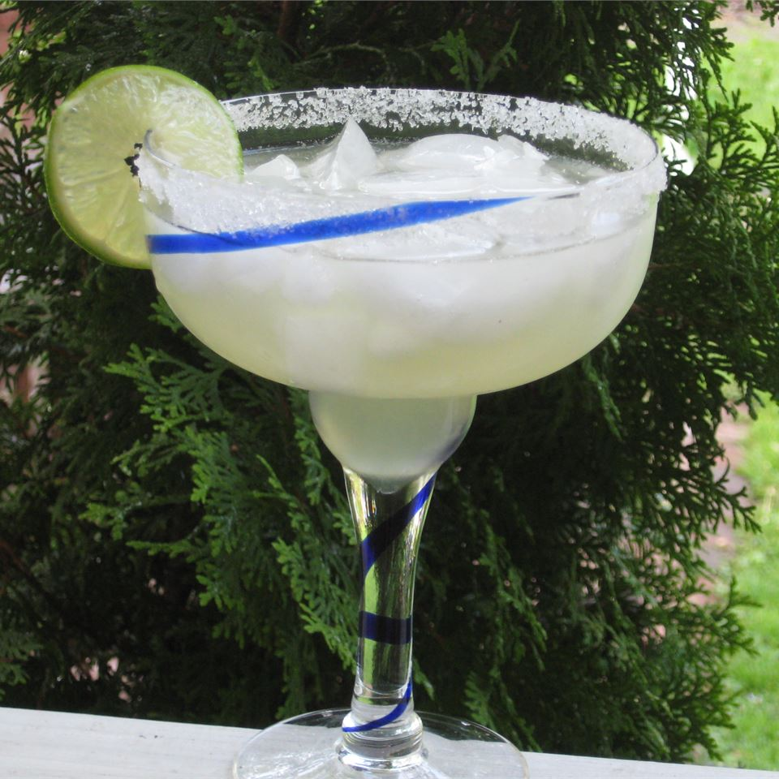

Margarita

This is a recipe for a delicious citrusy Marg. Perfect for the pool or the beach.
Ingredients
- 5 fluid ounces tequila
- 3 fluid ounces fresh lime juice
- 1 fluid ounce sweetened lime juice
- 3 fluid ounces triple sec
- ice cubes
- 1 lime, cut into wedges
- rimming salt
Recipe
- Measure the tequila, two types of lime juice and triple sec into a cocktail shaker.
- Add ice and shake about 30 seconds
- Rub a lime wedge around the edge of a margarita glass and rim with salt
- Garnish with a lime wedge